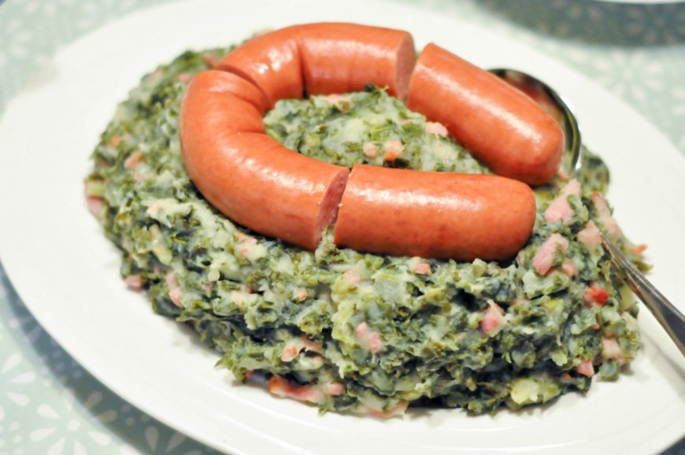

Deze klassieke Hollandse stamppot met rookworst mag niet ontbreken tijdens de winter.
Lekker met appelmoes of gebakken spekjes.
Hieronder beschrijven we oma's favoriete en geheime ;) variant
Ingredienten
- 300 g gesneden boerenkool
- 500 g kruimige aardappels (geschild)
- 1 grote rookworst
- 1 scheutje warme melk
- 20 g warme melk
- 1 theelepel mosterd
- peper en zout
- Snufje nootmuskaat
Bereidingswijze
- Breng een grote pan water met een snufje zout aan de kook en voeg de aardappels hier aan toe in gelijke groottes
- Voeg de gesneden boerenkool toe en laat bovenop de aardappels drijven.
- Doe de deksel op de pan en kook de aardappels en boerenkool in ca. 20 minuten gaar. Giet af en stamp daarna fijn.
- Voeg de boter, mosterd en melk toe en meng tot een smeuïge puree. Breng de boerenkoolstamppot op smaak met een beetje peper, zout en nootmuskaat.
- Verwarm de rookworst en serveer bij de boerenkool.
- Ook lekker met wat appelmoes of gebakken spekjes.
- Kies ook eens voor een vegetarische of veganistische rookworst. Ook lekker.